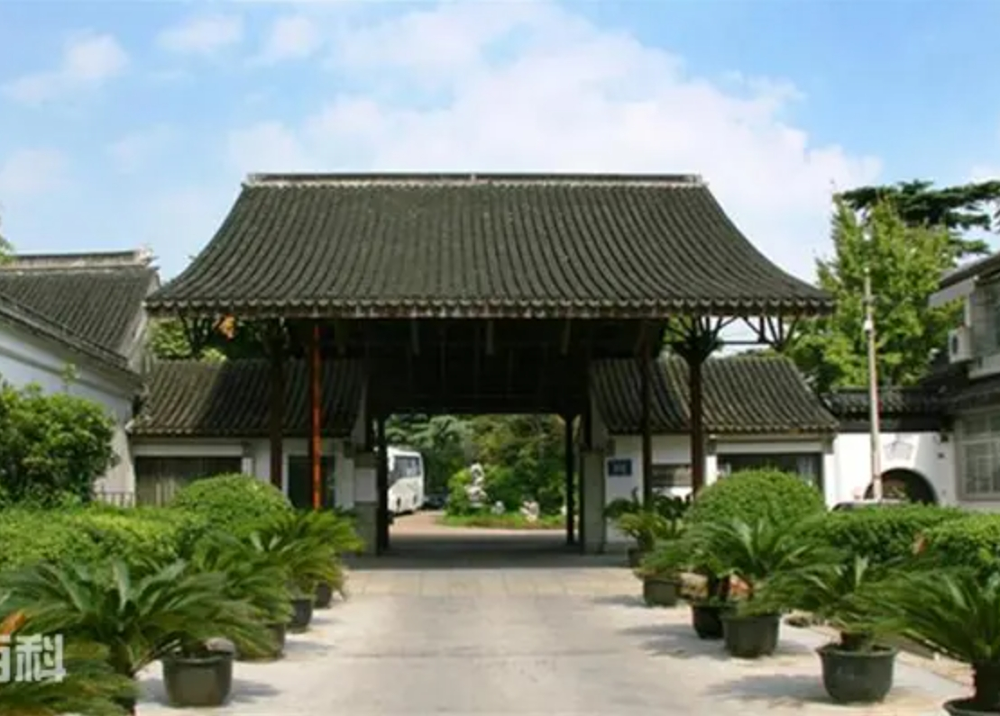
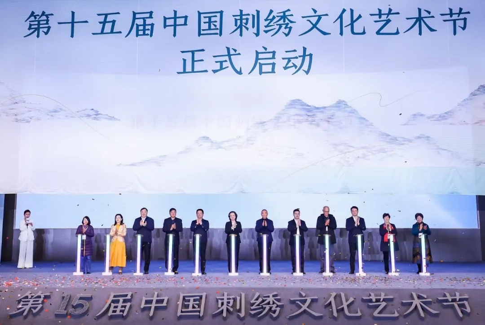
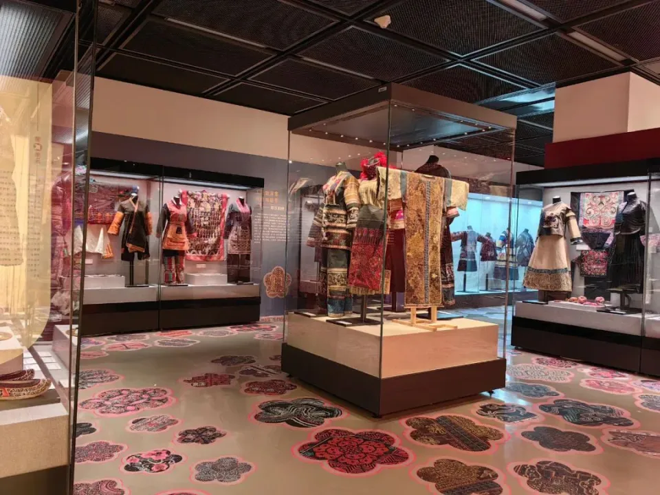

-

中国刺绣研究中心（苏州）成立
2023年12月8日 中国苏州高新区中国刺绣研究中心的成立及本次艺术节的成功举办，不仅彰显了苏州对传统文化的深刻理解与尊崇， 更为中国刺绣艺术在现代社会的创新发展和多元融合奠定了坚实的基础， 为中国刺绣文化注入了新的活力与方向，开启了传统与现代融合的崭新篇章。第十五届中国刺绣文化艺术节
2023年12月8日 在苏州高新区开幕本届艺术节旨在激活非遗传承高质量发展的内在动力，聚焦民间工艺助力乡村振兴，引领刺绣工艺文化从传统向当代转型激发创新性发展。 开幕仪式上发布了包括“苏绣小镇杯”文化创意设计大赛、苏绣传承创新发展白皮书等，以促进苏绣文化的多元发展和融合。“一线生花”中华刺绣文化展
2024年1月-21日 中国民族博物馆主办、中国妇女儿童博物馆承办本次展览是集中展示中国各民族刺绣的首次专展，共展陈刺绣作品200件套， 重点介绍了分布在祖国各地的代表性绣品，展现了中华刺绣文化的诗性空间。 加强了非物质文化遗产的保护和传承工作，刺绣文化正焕发出新的生机和活力。